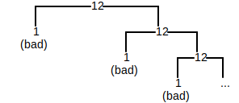
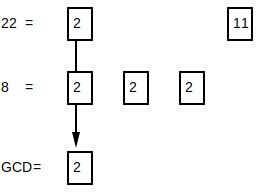
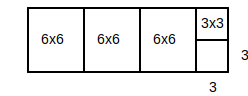
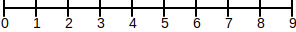
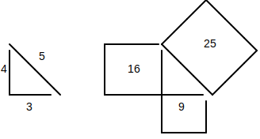

PREREQ OF NEEDING TO KNOW ABOUT REAL NUMBERS AND ARITHMETIC OPERATIONS ON THOSE REAL NUMBERS.
TODO: continue with openstax elementary algebra, then intermediate algebra, then college algebra DO NOT DO THE PROBLEMS, JUST DO PROCESS AND TERMINOLOGY
Every composite number can be written as a product of prime numbers. For example...
The process of breaking down a composite number into a product of primes is called prime factorization. Prime factorization happens via the factor tree algorithm, which involves taking the input and recursively breaking it down into one of its factor pairs until all factors are prime.
For example, to break down the number 54, choose one of its factor pairs...
Then, for each factor, break it down even further by choosing one of its factor pairs...

All factors are now prime -- 54 = 3*2*3*3.
⚠️NOTE️️️⚠️
Prime factors are typically written out from smallest to largest, so writing out the prime factors of the example above would be 54 = 2*3*3*3.
If you know exponents, the example above can be further condensed as .
When choosing a factor pair, the pair can't include 1 or the number being factored itself. For example, if choosing a factor pair for 12..
The reason why ... * 1 can't be used is because 1 is neither a prime nor can it be factorized to primes. * 12 (the number being factored itself) can't be used is because it effectively does nothing -- it finishes at the same place it started at.
For example, trying to build a factor tree for 12 using one of the bad factor pairs...

Note that the prime factors for a number will always be the same regardless of which factor pairs are chosen (as long as its a valid factor pair). For example, in the initial example above, if 54 were factored to (2, 27) instead of (9, 6) ...

The prime factors would still be 54 = 2*3*3*3.
The way to perform this algorithm as code is as follows...
arithmetic_code/Factor.py (lines 104 to 124):
@log_decorator
def factor_tree(num: int) -> FactorTreeNode:
log(f'Creating factor tree for {num}...')
factors = factor_fastest(num)
# remove factor pairs that can't used in factor true: (1, num) or (num, 1)
factors = set([f for f in factors if f != 1 and f != num])
ret = FactorTreeNode()
if len(factors) == 0:
ret.value = num
log(f'Cannot factor {num} is prime -- resulting tree: {ret}')
else:
factor1 = next(iter(factors))
factor2 = num // factor1
ret.value = num
ret.left = factor_tree(factor1)
ret.right = factor_tree(factor2)
log(f'Factored {num} to {factor1} and {factor2} -- resulting tree: {ret}')
return ret
↩PREREQUISITES↩
The least common multiple is the process of taking 2 numbers and finding the smallest multiple between them. That is, if you listed out their multiples starting from 1, the first match between them would be the least common multiple.
There are 2 common algorithms used to find the least common multiple between 2 numbers.
The first algorithm is called the listing multiples method. It involves listing out the multiples for each number starting from 1 until there's a match. For example, finding the least common multiple between 4 and 6...
| 1 | 2 | 3 | 4 | 5 | 6 | 7 | 8 | 9 | |
|---|---|---|---|---|---|---|---|---|---|
| 4 | 4 | 8 | 12 | 16 | 20 | 24 | 28 | 32 | 36 |
| 6 | 6 | 12 | 18 | 24 | 30 | 36 |
is 12 because 6*2=12 and 4*3=12.
The way to perform this algorithm as code is as follows...
arithmetic_code/LeastCommonMultiple.py (lines 10 to 39):
@log_decorator
def lcm_walk(num1: int, num2: int) -> tuple[list[int], list[int]]:
num1_multiples: list[int] = []
num2_multiples: list[int] = []
num1_counter = 1
num2_counter = 1
while True:
log(f'Calculating {num1_counter} multiple of {num1}...')
num1_multiple = num1 * num1_counter
num1_multiples.append(num1_multiple)
log(f'Calculating {num2_counter} multiple of {num2}...')
num2_multiple = num2 * num2_counter
num2_multiples.append(num2_multiple)
log(f'Testing {num1_multiple} vs {num2_multiple}')
if num1_multiple == num2_multiple:
log(f'Matches! LCM is {num1_multiple}')
break
elif num1_multiple < num2_multiple:
log(f'Increasing first multiple (multiple for {num1})')
num1_counter += 1
elif num1_multiple > num2_multiple:
log(f'Increasing second multiple (multiple for {num2})')
num2_counter += 1
return num1_multiple
The second algorithm is called the prime factors method. It involves calculating the prime factors for each number and merging them to get the least common multiple. For example, finding the least common multiple between 4 and 6...
prime factors of 4: 4 = 2 * 2
prime factors of 6: 6 = 2 * 2 * 3
merge the prime factors together to get 12 = 2 * 2 * 3

The way to perform this algorithm as code is as follows...
arithmetic_code/LeastCommonMultiple.py (lines 43 to 74):
@log_decorator
def lcm_prime_factorize(num1: int, num2: int) -> int:
log(f'Calculating prime factors for {num1}...')
num1_primes = sorted(factor_tree(num1).get_prime_factors())
log(f'{num1_primes}')
log(f'Calculating prime factors for {num2}...')
num2_primes = sorted(factor_tree(num2).get_prime_factors())
log(f'{num2_primes}')
distinct_primes: set[int] = set()
[distinct_primes.add(p) for p in num1_primes]
[distinct_primes.add(p) for p in num2_primes]
log(f'Combining prime factors to get LCM...')
least_common_multiple = 1
least_common_multiple_primes = Counter()
for prime in sorted(list(distinct_primes)):
num1_count = num1_primes.count(prime)
num2_count = num2_primes.count(prime)
if num1_count >= num2_count:
for i in range(0, num1_count):
least_common_multiple = least_common_multiple * prime
least_common_multiple_primes[prime] += num1_count
else:
for i in range(0, num2_count):
least_common_multiple = least_common_multiple * prime
least_common_multiple_primes[prime] += num2_count
log(f'LCM is {least_common_multiple}')
return least_common_multiple
↩PREREQUISITES↩
The greatest common divisor is the process of taking 2 numbers and finding the largest possible divisor between the two of them. In other words, finding the greatest number that evenly divides both numbers.
There are 3 common algorithms used to find the greatest common divisor between 2 numbers.
The first algorithm is to test divisions on incrementally larger numbers until you reach the smaller of the 2 numbers. The largest tested number that was evenly divisible is the greatest common divisor. For example, for the numbers 22 and 8...
The greatest common divisor is 2.
The way to perform this algorithm as code is as follows...
arithmetic_code/GreatestCommonDivisor.py (lines 8 to 34):
@log_decorator
def gcd_naive(num1: int, num2: int) -> int:
log(f'Calculating gcd for {num1} and {num2}...')
log_indent()
log(f'Sorting to determine smaller input...')
min_num = min(num1, num2)
log(f'Testing up to smaller input ({min_num})...')
log_indent()
for i in range(1, min_num+1):
log(f'Testing {i}...')
quotient1 = num1 // i
remainder1 = num1 - (i * quotient1)
quotient2 = num2 // i
remainder2 = num2 - (i * quotient2)
if remainder1 == 0 and remainder2 == 0:
log(f'{num1} and {num2} are both divisible by {i}...')
found = i
else:
log(f'{num1} and {num2} are NOT both divisible by {i}...')
log_unindent()
log_unindent()
log(f'GCD is {found}')
return found
The second algorithm is to factor both numbers and take the largest common factor between them. The largest common factor is the greatest common divisor. For example, for the numbers 22 and 8, ...
The greatest common factor between them is 2.
⚠️NOTE️️️⚠️
You can also use prime factorization. Prime factorize both numbers to their prime factors -- any factors contained in both are prime factors of the greatest common divisor. For example...

The way to perform this algorithm as code is as follows...
arithmetic_code/GreatestCommonDivisor.py (lines 38 to 59):
@log_decorator
def gcd_factor(num1: int, num2: int) -> int:
log(f'Calculating gcd for {num1} and {num2}...')
log_indent()
log(f'Calculating factors for {num1}...')
factors1 = factor_fastest(num1)
log(f'Factors for {num1}: {factors1}')
log(f'Calculating factors for {num2}...')
factors2 = factor_fastest(num2)
log(f'Factors for {num2}: {factors2}')
log(f'Finding common factors...')
common_factors = factors1 & factors2 # set intersection
log(f'Common factors for {num1} and {num2}: {common_factors}')
found = max(common_factors)
log_unindent()
log(f'GCD is {found}')
return found
The third algorithm is to use Euclid's algorithm to compute the greatest common divisor. This is the algorithm most used by both humans and computers to calculate the greatest common divisor because, for large numbers, it's less labour intensive than the other two methods.
Imagine the numbers 8 and 22. The algorithm starts by sorting the numbers from largest to smallest and dividing them:
It then takes the divisor and the remainder, sorts them from largest to smallest, and divides them again:
It keeps repeating this process until the remainder reaches 0. For this example, it only needs to repeat the process one more time:
The greatest common factor is the divisor when the remainder is 0. In this example, it's 2.
The way to perform this algorithm as code is as follows...
arithmetic_code/GreatestCommonDivisor.py (lines 64 to 87):
@log_decorator
def gcd_euclid(num1: int, num2: int) -> int:
log(f'Calculating gcd for {num1} and {num2}...')
log_indent()
next_nums = [num1, num2]
while True:
log(f'Sorting {next_nums}...')
next_nums.sort() # sort smallest to largest
next_nums.reverse() # reverse it so that it's largest to largest
log(f'Checking if finished ({next_nums[1]} == 0?)...')
if next_nums[1] == 0:
found = next_nums[0]
break
log(f'Dividing {next_nums} and grabbing the remainder for the next test...')
_ = next_nums[0] // next_nums[1]
remainder = next_nums[0] - (_ * next_nums[1])
next_nums = [next_nums[1], remainder]
log_unindent()
log(f'GCD is {found}')
return found
⚠️NOTE️️️⚠️
The following is my attempt at explaining Euclid's algorithm after reading several online resources. You need an understanding of geometry and algebra before continuing.
Geometric explanation
Conceptually, you can think of Euclid's algorithm as recursively breaking off square chunks out of a rectangular area until it finds the smallest possible chunk that can be evenly copied to recreate the original rectangle. For example, imagine the numbers 21 and 6...

Since in 21x6, 6 is the smaller side, break off 6 from the 21 to get a 6x6 block...

Since in 15x6, 6 is the smaller side, break off 6 from the 15 to get a 6x6 block...

Since in 9x6, 6 is the smaller side, break off 6 from the 9 to get a 6x6 block...

Since in 3x6, 6 is the smaller side, break off 3 from the 6 to get a 3x3 block...

The remaining block is also 3x3 block. As such, the largest size that this entire rectangle can be constructed from is 3x3. The greatest common divisor is 3.

Notice how this is subtracting from the larger side at each step. Since division is iterative subtraction, this entire algorithm can be done using division. Starting from the very beginning...
Since in 21x6, 6 is the smaller side, break off as many blocks of 6 as possible from 21: (3 blocks of 6x6, with 3 remaining)...
Since in 3x6, 3 is the smaller side, break off as many blocks of 3 as possible from 6: (2 blocks of 3x3, with 0 remaining)...
Algebraic explanation
If 2 numbers are evenly divisible by some other number, then their sum/difference must also be divisible. For example, the numbers 21 and 6 are both divisible by 3:

Since they're both divisible by 3, if you were to add 18 and 6 together, the sum would also be divisible by 3...

Similarly, if you were to subtract 21 and 6, the difference would also be divisible by 3...

Even if you don't know what the divisor is, you can recursively break down the problem using the rules stated above. Imagine that you didn't know that 3 was the divisor for the previous example, but you know that some evenly divisible number existed...
Since you know that the if 21 and 6 are both divisible by d, their difference must also be divisible by d...
Now you know that 3 numbers are divisible by d: 21, 6, 15. Since you know that 15 and 6 are both divisible by d, their difference must also be divisible by d...
Now you know that 4 numbers are divisible by d: 21, 6, 15, and 9. Since you know that 15 and 9 are both divisible by d, their difference must also be divisible by d...
Now you know that 5 numbers are divisible by d: 21, 6, 15, 9, and 6. Since you know that 9 and 6 are both divisible by d, their difference must also be divisible by d...
Now you know that 6 numbers are divisible by d: 21, 6, 15, 9, 6, 3. Since you know that 9 and 6 are both divisible by d, their difference must also be divisible by d...
is 0, so the algorithm stops at this point -- d is 3.
⚠️NOTE️️️⚠️
Notice how for each subtraction step, the last 2 numbers are being chosen. When subtracting, the larger number goes first -- always subtract FROM the larger number.
You can plug 3 for d into the expressions above and each will evaluate to a whole number (no remainder). This algorithm is continually reducing the problem until it converges to the single greatest common divisor...
An expression is a set of operations, variables, and constants glued together as a pipeline. In this case, an ...
For example, in the expression 5+x-3, ...
When the variables of an expression are swapped out for constants, the expression can be performed, typically referred to as evaluation. In the example above, swapping x with 2 results in the expression 5+2-3, which evaluates to 4.
Expressions have rules that govern the order in which certain operations get evaluated, and those operations have certain properties that allow the expression's operation to be shuffled around in various ways while still producing the same output when evaluated. These rules and properties are explained in the subsections below.
When evaluating an expression, certain arithmetic operators must be evaluated before others. The general rule of thumb to remember is BEDMAS, which is an acronym for the operator precedence in an expression:
The list above essentially says that if your expression contains ...
exponents (E), evaluate them first.
1 + 2 - 3 + 10^2 * 4 * 5 ÷ 6
^^^^
evaluate this first
divisions or multiplications (DM), evaluate them second (chains evaluated left-to-right).
1 + 2 - 3 + 10^2 * 4 * 5 ÷ 6
^^^^^^^^^
evaluate these next (left-to-right)
additions or subtractions (AS), evaluate them third (chains evaluated left-to-right).
1 + 2 - 3 + 10^2 * 4 * 5 ÷ 6
^^^^^^^^^
evaluate these next (left-to-right)
However, if the expression contains brackets (B), the contents of each bracket needs to be evaluated before evaluating the list above. This is a recursive process, meaning if there are nested brackets, the most deeply nested go first, then the second-most deeply nested, then the third most deeply nested, etc..
For example, the expression (4*(8+0-1))÷2+3 is evaluated as ...
⚠️NOTE️️️⚠️
The left-to-right evaluation for chains of division/multiplication (DM) and addition/subtraction (AS) is short-hand for implicitly adding brackets. For example, consider 8 + 0 - 1. Evaluating it left-to-right is the same as evaluating if brackets were added around each operation starting with the left-most pair going right-ward ...
8 + 0 - 1 ... vs ... ((8 + 0) - 1)
You can effectively think BEDMAS as the rules for how an expression's evaluation nest. In the context of a traditional programming language, this would be nested function calls:
# Nesting (4*(6+1))÷2+3 ...
add(div(mul(4, add(6, 1)), 2), 3)
# Nesting (4*(6+1))÷2+3, using symbols as function names (+, -, *, / vs add, sub, mul, div) ...
+(/(*(4, +(6, 1)), 2), 3)
Another way to think of this is as a tree, where the tree is computed from leaf nodes to root nodes.
⚠️NOTE️️️⚠️
The expression parsing code is too large to post here, but the execution of that code is shown below. There are key differences with how the code treats expressions vs how you were probably taught expressions in high school / college ...
Only integer numbers are allowed as constants in the expressions. For rational numbers that aren't integers, those numbers can be expressed as ratios / fractions (e.g. 4.5 is ).
Fractions and division are the same thing
There is no distinction between fractions and divisions (e.g. is the same as ). The code uses the / for both.
A variable can't be positive or negative in the same way that an integer can be. Instead, a negated variable is represented by multiplying that variable by -1 (e.g. -x becomes -1*x).
Parser.py produced the following ...
Parse (4 * (6 + 1)) / 2 + 3 ...
+(/(*(4, +(6, 1)), 2), 3)
Parse 5/2 + (-45/10)^-x + -(3 * 8) / -log(2, 32) ...
+(+(/(5, 2), ^(/(-45, 10), *(-1, x))), /(*(-1, *(3, 8)), *(-1, log(2, 32))))
The following subsections detail common rules / properties around condensing and expanding arithmetic operations.
↩PREREQUISITES↩
Given a counting number, there exists a set of prime numbers that can be multiplied together to produce that number: Prime factors.
The conversion to prime factors is useful for fractions. By cancelling out common prime factors between the numerator and denominator of a fraction, you end up with a simplified fraction.
It's common to always have fractions in their simplified forms because it's easier to check if two fractions are equivalent when they're both simplified. For example, most people can't immediately tell that and are equivalent.
🔍SEE ALSO🔍
arithmetic_code/expression/properties/ArithmeticConversions.py (lines 14 to 29):
def prime_factors(n: Node):
if not isinstance(n, ConstantNode):
return set()
negative = n < 0
if negative:
n = -n
if n in {0, 1, -1}:
return set()
factors = factor_tree(n.value.numerator).get_prime_factors()
last = ConstantNode(factors.pop())
while factors:
new = ConstantNode(factors.pop())
last = FunctionNode('*', [last, new])
if negative:
last = FunctionNode('*', [ConstantNode(-1), last])
return {last}
ArithmeticConversions.py produced the following alternate forms ...
prime_factors with input 18 ...
18 = ((2*3)*3)
prime_factors with input -18 ...
-18 = (-1*((2*3)*3))
A subtraction operation can be converted to an addition operation and vice-versa.
The conversion from subtraction to addition is useful because subtraction is missing the commutative property and associative property. If you convert subtraction to addition, it enables you to shuffle around the expression in more ways.
arithmetic_code/expression/properties/ArithmeticConversions.py (lines 34 to 51):
def sub_to_add(n: FunctionNode):
if isinstance(n, FunctionNode) and n.op == '-':
lhs = n.args[0]
rhs = n.args[1]
rhs_negated = FunctionNode('*', [ConstantNode(-1), rhs])
_n = FunctionNode('+', [lhs, rhs_negated])
return {_n}
return set()
def add_to_sub(n: FunctionNode):
if isinstance(n, FunctionNode) and n.op == '+':
lhs = n.args[0]
rhs = n.args[1]
rhs_negated = FunctionNode('*', [ConstantNode(-1), rhs])
_n = FunctionNode('-', [lhs, rhs_negated])
return {_n}
return set()
ArithmeticConversions.py produced the following alternate forms ...
add_to_sub with input a+b ...
(a+b) = (a-(-1*b))
add_to_sub with input 0+9 ...
(0+9) = (0-(-1*9))
sub_to_add with input a-b ...
(a-b) = (a+(-1*b))
sub_to_add with input 0-9 ...
(0-9) = (0+(-1*9))
Adding the same thing (expression) together many times can be condensed into a single multiplication.
arithmetic_code/expression/properties/ArithmeticConversions.py (lines 56 to 91):
def add_to_mul(n: Node):
if isinstance(n, FunctionNode) and n.op == '+':
lhs, rhs = n.args
lhs_const, lhs_factor = _split_out_multiplication_constant(lhs)
rhs_const, rhs_factor = _split_out_multiplication_constant(rhs)
if lhs_const is None or lhs_factor is None or rhs_const is None or rhs_factor is None:
return set()
if lhs_factor != rhs_factor:
return set()
_n = FunctionNode('*', [lhs_const + rhs_const, lhs_factor])
return {_n}
return set()
def mul_to_add(n: Node):
if isinstance(n, FunctionNode) and n.op == '*':
const, factor = _split_out_multiplication_constant(n)
if factor is None or const is None:
return set()
if const > 0:
_n = factor
while const > 1:
_n = FunctionNode('+', [factor, _n])
const = const - 1
return {_n}
return set()
def _split_out_multiplication_constant(a: Node):
if isinstance(a, ConstantNode) or isinstance(a, VariableNode):
return ConstantNode(1), a
elif isinstance(a, FunctionNode) and a.op == '*' and isinstance(a.args[0], ConstantNode):
a_lhs, a_rhs = a.args
return a_lhs, a_rhs
return None, None
ArithmeticConversions.py produced the following alternate forms ...
add_to_mul with input a+a ...
(a+a) = (2*a)
add_to_mul with input 9+9 ...
(9+9) = (2*9)
mul_to_add with input 3*a ...
(3*a) = (a+(a+a))
mul_to_add with input 3*9 ...
(3*9) = (9+(9+9))
Multiplying the same thing (expression) together many times can be condensed into a single exponentiation.
arithmetic_code/expression/properties/ArithmeticConversions.py (lines 95 to 130):
def mul_to_exp(n: FunctionNode):
if isinstance(n, FunctionNode) and n.op == '*':
lhs, rhs = n.args
lhs_base, lhs_const = _split_out_exponent_constant(lhs)
rhs_base, rhs_const = _split_out_exponent_constant(rhs)
if lhs_const is None or lhs_base is None or rhs_const is None or rhs_base is None:
return set()
if lhs_base != rhs_base:
return set()
_n = FunctionNode('^', [lhs_base, lhs_const + rhs_const])
return {_n}
return set()
def exp_to_mul(n: FunctionNode):
if isinstance(n, FunctionNode) and n.op == '^':
base, exp = _split_out_exponent_constant(n)
if base is None or exp is None:
return set()
if exp > 0:
_n = base
while exp > 1:
_n = FunctionNode('*', [base, _n])
exp = exp - 1
return {_n}
return set()
def _split_out_exponent_constant(a: Node):
if isinstance(a, ConstantNode) or isinstance(a, VariableNode):
return a, ConstantNode(1)
elif isinstance(a, FunctionNode) and a.op == '^' and isinstance(a.args[1], ConstantNode):
a_lhs, a_rhs = a.args
return a_lhs, a_rhs
return None, None
ArithmeticConversions.py produced the following alternate forms ...
mul_to_exp with input a*a ...
(a*a) = (a^2)
mul_to_exp with input 9*9 ...
(9*9) = (9^2)
exp_to_mul with input a^3 ...
(a^3) = (a*(a*a))
exp_to_mul with input 9^3 ...
(9^3) = (9*(9*9))
The following subsections detail common rules / properties around addition.
The commutative property of addition states the addition produces the same result regardless of the order in which operands are submitted.
arithmetic_code/expression/properties/RatioAdditionProperties.py (lines 14 to 24):
def commutative(n: Node):
if not isinstance(n, FunctionNode):
return set()
variations = set()
if n.op == '+':
_n = FunctionNode(
n.op,
n.args[::-1]
)
variations.add(_n)
return variations
RatioAdditionProperties.py produced the following alternate forms ...
commutative with input a+b ...
(a+b) = (b+a)
commutative with input 5+6 ...
(5+6) = (6+5)
The associative property of addition states that a chain of additions produce the same result regardless of the order in which those addition operations are performed.
arithmetic_code/expression/properties/RatioAdditionProperties.py (lines 29 to 54):
def associative(n: Node):
if not isinstance(n, FunctionNode):
return set()
variations = set()
if n.op == '+':
l_arg = n.args[0]
r_arg = n.args[1]
if isinstance(l_arg, FunctionNode) and l_arg.op == n.op:
_n = FunctionNode(
n.op,
[
l_arg.args[0],
FunctionNode(n.op, [l_arg.args[1], r_arg])
]
)
variations.add(_n)
if isinstance(r_arg, FunctionNode) and r_arg.op == n.op:
_n = FunctionNode(
n.op,
[
FunctionNode(n.op, [l_arg, r_arg.args[0]]),
r_arg.args[1]
]
)
variations.add(_n)
return variations
RatioAdditionProperties.py produced the following alternate forms ...
associative with input (a+b)+c ...
((a+b)+c) = (a+(b+c))
associative with input (5+6)+1 ...
((5+6)+1) = (5+(6+1))
The identity property of addition states that adding a number to 0 (identity of addition) results in that same number.
arithmetic_code/expression/properties/RatioAdditionProperties.py (lines 59 to 64):
def identity(n: Node):
if not isinstance(n, FunctionNode):
return set()
if n.op == '+' and n.args[1] == 0:
return {n.args[0]}
return set()
RatioAdditionProperties.py produced the following alternate forms ...
identity with input x+0 ...
(x+0) = x
identity with input 9+0 ...
(9+0) = 9
The inverse property of addition states that adding a number to its negative results in 0 (identity of addition).
arithmetic_code/expression/properties/RatioAdditionProperties.py (lines 69 to 76):
def inverse(n: Node):
if not isinstance(n, FunctionNode):
return set()
if n.op == '+':
if (isinstance(n.args[0], ConstantNode) and n.args[1] == -n.args[0])\
or n.args[1] == FunctionNode('*', [ConstantNode(-1), n.args[0]]):
return {ConstantNode(0)}
return set()
RatioAdditionProperties.py produced the following alternate forms ...
inverse with input x+-x ...
(x+(-1*x)) = 0
inverse with input 9+-9 ...
(9+-9) = 0
↩PREREQUISITES↩
Adding two fractions together requires that their denominators be the same. That is, if the denominators aren't already the same, both fractions must be converted to equivalent fractions that share the same denominator.
arithmetic_code/expression/properties/RatioAdditionProperties.py (lines 81 to 113):
def combine(n: Node):
if not isinstance(n, FunctionNode):
return set()
if n.op == '+':
l_arg, r_arg = n.args
ret = FunctionNode('/', [
FunctionNode(
'+',
[
FunctionNode('*', [top(l_arg), bottom(r_arg)]),
FunctionNode('*', [top(r_arg), bottom(l_arg)])
]
),
FunctionNode('*', [bottom(l_arg), bottom(r_arg)])
])
return {ret}
return set()
def uncombine(n: Node):
if not isinstance(n, FunctionNode):
return set()
n_top = top(n)
n_bottom = bottom(n)
if isinstance(n_top, FunctionNode) and n_top.op == '+':
l_arg = n_top.args[0]
r_arg = n_top.args[1]
ret = FunctionNode('+', [
FunctionNode('/', [l_arg, n_bottom]),
FunctionNode('/', [r_arg, n_bottom])
])
return {ret}
return set()
RatioAdditionProperties.py produced the following alternate forms ...
combine with input a+b ...
(a+b) = (((a*1)+(b*1))/(1*1))
combine with input (a/b)+(c/d) ...
((a/b)+(c/d)) = (((a*d)+(c*b))/(b*d))
combine with input (a/b)+c ...
((a/b)+c) = (((a*1)+(c*b))/(b*1))
uncombine with input a+b ...
(a+b) = ((a/1)+(b/1))
uncombine with input (a+c)/b ...
((a+c)/b) = ((a/b)+(c/b))
uncombine with input ((a*d)+(c*b))/(b*d) ...
(((a*d)+(c*b))/(b*d)) = (((a*d)/(b*d))+((c*b)/(b*d)))
↩PREREQUISITES↩
The following subsections detail common rules / properties around subtraction.
Recall that subtraction can be converted to addition: . The conversion from subtraction to addition is useful because subtraction is missing the commutative property and associative property. If you convert subtraction to addition, it enables you to shuffle around the expression in more ways.
The identity property of subtraction states that subtracting 0 (identity of subtraction) from a number results in that same number.
arithmetic_code/expression/properties/RatioSubtractionProperties.py (lines 14 to 19):
def identity(n: Node):
if not isinstance(n, FunctionNode):
return set()
if n.op == '-' and n.args[1] == 0:
return {n.args[0]}
return set()
RatioSubtractionProperties.py produced the following alternate forms ...
identity with input x-0 ...
(x-0) = x
identity with input 9-0 ...
(9-0) = 9
The inverse property of subtraction states that subtracting a number from itself results in 0 (identity of subtraction).
⚠️NOTE️️️⚠️
If the subtraction were converted to addition, this would be the inverse property of addition.
🔍SEE ALSO🔍
arithmetic_code/expression/properties/RatioSubtractionProperties.py (lines 24 to 30):
def inverse(n: Node):
if not isinstance(n, FunctionNode):
return set()
if n.op == '-':
if n.args[0] == n.args[1]:
return {ConstantNode(0)}
return set()
RatioSubtractionProperties.py produced the following alternate forms ...
inverse with input x-x ...
(x-x) = 0
inverse with input 9-9 ...
(9-9) = 0
Subtracting a fraction from another fraction requires that both fractions have the same denominator. That is, if the denominators aren't already the same, both fractions must be converted to equivalent fractions that share the same denominator.
arithmetic_code/expression/properties/RatioSubtractionProperties.py (lines 35 to 67):
def combine(n: Node):
if not isinstance(n, FunctionNode):
return set()
if n.op == '-':
l_arg, r_arg = n.args
ret = FunctionNode('/', [
FunctionNode(
'-',
[
FunctionNode('*', [top(l_arg), bottom(r_arg)]),
FunctionNode('*', [top(r_arg), bottom(l_arg)])
]
),
FunctionNode('*', [bottom(l_arg), bottom(r_arg)])
])
return {ret}
return set()
def uncombine(n: Node):
if not isinstance(n, FunctionNode):
return set()
fn_top = top(n)
fn_bottom = bottom(n)
if isinstance(fn_top, FunctionNode) and fn_top.op == '-':
l_arg = fn_top.args[0]
r_arg = fn_top.args[1]
ret = FunctionNode('-', [
FunctionNode('/', [l_arg, fn_bottom]),
FunctionNode('/', [r_arg, fn_bottom])
])
return {ret}
return set()
RatioSubtractionProperties.py produced the following alternate forms ...
combine with input a-b ...
(a-b) = (((a*1)-(b*1))/(1*1))
combine with input (a/b)-(c/d) ...
((a/b)-(c/d)) = (((a*d)-(c*b))/(b*d))
combine with input (a/b)-c ...
((a/b)-c) = (((a*1)-(c*b))/(b*1))
uncombine with input a-b ...
(a-b) = ((a/1)-(b/1))
uncombine with input (a-c)/b ...
((a-c)/b) = ((a/b)-(c/b))
uncombine with input ((a*d)+(c-b))/(b*d) ...
The following subsections detail common rules / properties around multiplication.
The commutative property of multiplication states that multiplication produces the same result regardless of the order in which operands are submitted.
arithmetic_code/expression/properties/RatioMultiplicationProperties.py (lines 15 to 25):
def commutative(n: Node):
if not isinstance(n, FunctionNode):
return set()
variations = set()
if n.op == '*':
_n = FunctionNode(
n.op,
n.args[::-1]
)
variations.add(_n)
return variations
RatioMultiplicationProperties.py produced the following alternate forms ...
commutative with input a*b ...
(a*b) = (b*a)
commutative with input 5*6 ...
(5*6) = (6*5)
The associative property of multiplication states that a chain of multiplications produce the same result regardless of the order in which those multiplication operations are performed.
arithmetic_code/expression/properties/RatioMultiplicationProperties.py (lines 30 to 55):
def associative(n: Node):
if not isinstance(n, FunctionNode):
return set()
variations = set()
if n.op == '*':
l_arg = n.args[0]
r_arg = n.args[1]
if isinstance(l_arg, FunctionNode) and l_arg.op == n.op:
_n = FunctionNode(
n.op,
[
l_arg.args[0],
FunctionNode(n.op, [l_arg.args[1], r_arg])
]
)
variations.add(_n)
if isinstance(r_arg, FunctionNode) and r_arg.op == n.op:
_n = FunctionNode(
n.op,
[
FunctionNode(n.op, [l_arg, r_arg.args[0]]),
r_arg.args[1]
]
)
variations.add(_n)
return variations
RatioMultiplicationProperties.py produced the following alternate forms ...
associative with input (a*b)*c ...
((a*b)*c) = (a*(b*c))
associative with input (5*6)*1 ...
((5*6)*1) = (5*(6*1))
The identity property of multiplication states that multiplying a number by 1 (identity of multiplication) results in that same number.
arithmetic_code/expression/properties/RatioMultiplicationProperties.py (lines 60 to 65):
def identity(n: Node):
if not isinstance(n, FunctionNode):
return set()
if n.op == '*' and n.args[1] == 1:
return {n.args[0]}
return set()
RatioMultiplicationProperties.py produced the following alternate forms ...
identity with input x*1 ...
(x*1) = x
identity with input 9*1 ...
(9*1) = 9
The inverse property of multiplication states that multiplying a number by its reciprocal results in 1 (identity of multiplication). The number can't be 0, because the reciprocal of 0 is undefined (a denominator of 0 is undefined).
arithmetic_code/expression/properties/RatioMultiplicationProperties.py (lines 70 to 76):
def inverse(n: Node):
if not isinstance(n, FunctionNode):
return set()
if n.op == '*':
if n.args[1] == FunctionNode('/', [ConstantNode(1), n.args[0]]):
return {ConstantNode(1)}
return set()
RatioMultiplicationProperties.py produced the following alternate forms ...
inverse with input x*(1/x) ...
(x*(1/x)) = 1
inverse with input 9*(1/9) ...
(9*(1/9)) = 1
The zero property of multiplication states that multiplying a number by 0 results in 0.
arithmetic_code/expression/properties/RatioMultiplicationProperties.py (lines 81 to 87):
def zero(n: Node):
if isinstance(n, FunctionNode) and n.op == '*':
r_arg = n.args[1]
if r_arg == 0:
return {ConstantNode(0)}
return set()
RatioMultiplicationProperties.py produced the following alternate forms ...
zero with input x*0 ...
(x*0) = 0
zero with input 9*0 ...
(9*0) = 0
Multiplying two fractions together just requires multiplying their numerators and denominators.
arithmetic_code/expression/properties/RatioMultiplicationProperties.py (lines 101 to 131):
def combine(n: Node):
if not isinstance(n, FunctionNode):
return set()
if n.op == '*':
l_arg, r_arg = n.args
if isinstance(l_arg, ConstantNode) and isinstance(r_arg, ConstantNode):
return {ConstantNode(l_arg.value * r_arg.value)}
ret = FunctionNode('/', [
FunctionNode('*', [top(l_arg), top(r_arg)]),
FunctionNode('*', [bottom(l_arg), bottom(r_arg)])
])
return {ret}
return set()
def uncombine(n: Node):
if not isinstance(n, FunctionNode):
return set()
n_top = top(n)
n_bottom = bottom(n)
if isinstance(n_top, FunctionNode) and n_top.op == '*':
l_arg = n_top.args[0]
r_arg = n_top.args[1]
ret = {
FunctionNode('*', [
FunctionNode('/', [l_arg, n_bottom]),
FunctionNode('/', [r_arg, ConstantNode(1)])
])
}
return ret
return set()
RatioMultiplicationProperties.py produced the following alternate forms ...
combine with input a*b ...
(a*b) = ((a*b)/(1*1))
combine with input (a/b)*(c/d) ...
((a/b)*(c/d)) = ((a*c)/(b*d))
combine with input (a/b)*c ...
((a/b)*c) = ((a*c)/(b*1))
uncombine with input a*b ...
(a*b) = ((a/1)*(b/1))
uncombine with input (a*c)/b ...
((a*c)/b) = ((a/b)*(c/1))
The following subsections detail common rules / properties around division (fractions).
The identity property of division states that dividing a number by 1 (identity of division) results in that same number.
arithmetic_code/expression/properties/RatioDivisionProperties.py (lines 15 to 20):
def identity(n: Node):
if not isinstance(n, FunctionNode):
return set()
if n.op == '/' and n.args[1] == 1:
return {n.args[0]}
return set()
RatioDivisionProperties.py produced the following alternate forms ...
identity with input x/1 ...
(x/1) = x
identity with input 9/1 ...
(9/1) = 9
The inverse property of division states that dividing a number by itself results in 1 (identity of division). The number can't be 0, because a denominator of 0 is undefined.
arithmetic_code/expression/properties/RatioDivisionProperties.py (lines 25 to 31):
def inverse(n: Node):
if not isinstance(n, FunctionNode):
return set()
if n.op == '/':
if n.args[0] == n.args[1] and n.args[1] != 0:
return {ConstantNode(1)}
return set()
RatioDivisionProperties.py produced the following alternate forms ...
inverse with input x/x ...
(x/x) = 1
inverse with input 9/9 ...
(9/9) = 1
The zero property of division states that a fraction with a numerator of 0 will always result in 0, so long as the denominator isn't 0. A fraction with a denominator of 0 is undefined.
arithmetic_code/expression/properties/RatioDivisionProperties.py (lines 36 to 42):
def zero(n: Node):
if isinstance(n, FunctionNode) and n.op == '/':
l_arg = n.args[0]
if l_arg == 0:
return {ConstantNode(0)}
return set()
RatioDivisionProperties.py produced the following alternate forms ...
zero with input 0/x ...
(0/x) = 0
zero with input 0/9 ...
(0/9) = 0
↩PREREQUISITES↩
Dividing two fractions (complex fraction) requires applying the equivalent fraction property, inverse property, and identity property. The idea is to remove the denominator of the complex fraction by taking the reciprocal of that denominator and multiplying both the numerator and denominator by it.
arithmetic_code/expression/properties/RatioDivisionProperties.py (lines 74 to 103):
def combine(n: Node):
if not isinstance(n, FunctionNode):
return set()
if n.op == '/':
l_arg, r_arg = n.args
ret = FunctionNode('/', [
FunctionNode('*', [top(l_arg), bottom(r_arg)]),
FunctionNode('*', [bottom(l_arg), top(r_arg)])
])
return {ret}
return set()
def uncombine(n: Node):
if not isinstance(n, FunctionNode):
return set()
if n.op == '/':
n_top = top(n)
n_bottom = bottom(n)
if not (isinstance(n_top, FunctionNode) and n_top.op == '*'
and isinstance(n_bottom, FunctionNode) and n_bottom.op == '*'):
return set()
l_top, r_top = n_top.args
l_bottom, r_bottom = n_bottom.args
ret = FunctionNode('/', [
FunctionNode('/', [l_top, l_bottom]),
FunctionNode('/', [r_bottom, r_top])
])
return {ret}
return set()
RatioDivisionProperties.py produced the following alternate forms ...
combine with input a/b ...
(a/b) = ((a*1)/(1*b))
combine with input (a/b)/(c/d) ...
((a/b)/(c/d)) = ((a*d)/(b*c))
combine with input (9/3)/(5/1) ...
((9/3)/(5/1)) = ((9*1)/(3*5))
uncombine with input (a*d)/(b*c) ...
((a*d)/(b*c)) = ((a/b)/(c/d))
uncombine with input (9*1)/(3*5) ...
((9*1)/(3*5)) = ((9/3)/(5/1))
↩PREREQUISITES↩
The equivalent fraction property states that the quantity of a fraction doesn't change if its numerator and denominator have a common factor added or removed.
arithmetic_code/expression/properties/EquivalentFractionProperty.py (lines 19 to 36):
def equivalent_fraction_basic(n: Node):
if not isinstance(n, FunctionNode):
return set()
if n.op == '/':
l_arg = n.args[0]
r_arg = n.args[1]
if isinstance(l_arg, FunctionNode) and l_arg.op == '*' and isinstance(r_arg, FunctionNode) and r_arg.op == '*' \
and l_arg.args[1] == r_arg.args[1]:
_n = FunctionNode(
'*',
[
FunctionNode('/', [l_arg.args[0], r_arg.args[0]]),
FunctionNode('/', [l_arg.args[1], r_arg.args[1]])
]
)
return {_n}
return set()
EquivalentFractionProperty.py produced the following alternate forms ...
equivalent_fraction_basic with input (a*b)/(c*b) ...
((a*b)/(c*b)) = ((a/c)*(b/b))
equivalent_fraction_basic with input (5*7)/(3*7) ...
((5*7)/(3*7)) = ((5/3)*(7/7))
The distributive property states that, when multiplying by a a chain of additions, the multiplication can be exploded out into each of the terms in that chain.
Note that...
arithmetic_code/expression/properties/DistributiveProperty.py (lines 14 to 48):
def distributive(n: Node):
if not isinstance(n, FunctionNode) or n.op != '*':
return set()
lhs = n.args[0]
rhs = n.args[1]
if isinstance(rhs, FunctionNode) and rhs.op == '+':
_n = FunctionNode(
'+',
[
FunctionNode('*', [lhs, rhs.args[0]]),
FunctionNode('*', [lhs, rhs.args[1]]),
]
)
return {_n}
return set()
def undistributive_basic(n: Node):
if not isinstance(n, FunctionNode) or n.op not in '+':
return set()
lhs = n.args[0]
rhs = n.args[1]
if isinstance(lhs, FunctionNode) and lhs.op == '*'\
and isinstance(rhs, FunctionNode) and rhs.op == '*'\
and lhs.args[0] == rhs.args[0]:
_n = FunctionNode(
'*',
[
lhs.args[0],
FunctionNode('+', [lhs.args[1], rhs.args[1]])
]
)
return {_n}
return set()
DistributiveProperty.py produced the following alternate forms ...
distributive with input 1*(x+1) ...
(1*(x+1)) = ((1*x)+(1*1))
distributive with input 3*(x+y+1) ...
(3*((x+y)+1)) = ((3*(x+y))+(3*1))
undistributive_basic with input (x+1)*2+(x+1)*3 ...
(((x+1)*2)+((x+1)*3)) = ((x+1)*(2+3))
undistributive_basic with input (x+1)*(1+2)+(x+1)*3 ...
(((x+1)*(1+2))+((x+1)*3)) = ((x+1)*((1+2)+3))
fraction - A way of representing numbers with equally-sized partial objects. The syntax for a fraction is , where the...
For example, if 4 parts make up a whole (denominator) and you have 9 of those parts (numerator), that's represented as .
proper fraction - A fraction with less than 1 whole (e.g. , , and ).
improper fraction - A fraction with at least 1 whole (e.g. , , and ).
simplified fraction - Of all equivalent fractions for a fraction, the one with smallest numerator and denominator. For the example above, is the simplified fraction for both and .
complex fraction - A fraction in which the numerator and / or denominator contains a fraction. For example, .
common denominator - Two fractions that have the same value for the denominator. For example, the fractions and don't have a common denominator, but their equivalent fractions and do.
reciprocal - A fraction with its numerator and denominator swapped. For example, the reciprocal of is .
mixed number - A fraction written in a form where an integer is used to represent the wholes and the remaining portion is written as a fraction. Recall that fractions can be thought of as unresolved integer division. For example, the fraction is equivalent to the division . Performing results in a quotient of (3 wholes with 3 remaining pieces). As such, can be written as the mixed number .
⚠️NOTE️️️⚠️
Don't get confused -- the mixed number means , it does not mean (multiplication).
number line - A type of diagram used to visualize the value that a number represents. It consists of a straight horizontal line with equidistant vertical notches spliced through out, where each notch is labelled with incrementally larger numbers from left-to-right...

The number being represented is marked on the line. For example, to represent the number 5...

addition - Combining the values of two numbers. For example, combining 3 items and 5 items together results in 7 items...
[●●●] [●●●●●]
3 5
group values together
[●●●●●●●●]
7
subtraction - Removing the value of one number from another number. For example, removing 3 items from 5 items results in 2 items...
[●●●●●]
5
pick out 3 from the 5
[●●] [●●●]
2 3
multiplication - Iteratively adding a number to itself for a certain number of iterations.
3+3+3+3+3=15
[●●●] 3
[●●●] 3
[●●●] 3
[●●●] 3
[●●●] 3
The output of a multiplication operation is called the product. In the example above, 15 is the product.
The inputs into the multiplication operation are either...
division - Iteratively subtracting a number by another number to find out how many iterations can be subtracted. For example, 15 can be subtracted by 3 exactly 5 iterations before nothing's left...
[●●●●●●●●●●●●●●●] start with 15
[●●●●●●●●●●●●] 15-3=12 (iteration 1)
[●●●●●●●●●] 12-3=9 (iteration 2)
[●●●●●●] 9-3=6 (iteration 3)
[●●●] 6-3=3 (iteration 4)
[] 3-3=0 (iteration 5)
Another way of thinking about division is that it's chopping up a number. Imagine cutting up a pie into 15 pieces and eating 3 pieces at a time. The pie will be done after you've eaten 5 times.
The output of a division operation is called the quotient. In the example above, the quotient is 5 (it subtracts 5 times).
The inputs into the division operation are called the dividend and divisor. In the example above, 15 is the dividend and 3 is the divisor.
⚠️NOTE️️️⚠️
One way to think of this is that the dividend (the number on the left / top) is the starting value, and the divisor is the number being iteratively subtracted.
In certain cases, division may result in some remaining value that isn't large enough for another subtraction iteration to take place. This remaining value is called the remainder. For example, 16 can be subtracted by 3 for 5 iterations but will have a remainder of 1...
[●●●●●●●●●●●●●●●●] start with 16
[●●●●●●●●●●●●●] 16-3=13 (iteration 1)
[●●●●●●●●●●] 13-3=10 (iteration 2)
[●●●●●●●] 10-3=7 (iteration 3)
[●●●●] 7-3=4 (iteration 4)
[●] 4-3=1 (iteration 5)
only 1 item left -- not enough for another subtraction iteration
1 is the remainder
multiple - Given integer numbers n and m (use the letters as placeholders for some arbitrary integer numbers). m is a multiple of n if some integer exists such that . For example, the multiples of 2 are...
2*0=2 -- 0 is a multiple of 2
2*1=2 -- 2 is a multiple of 2
┌──┐
│●●│ 2 can be grouped as 1 group of 2
└──┘
2*2=4 -- 4 is a multiple of 2
┌──┬──┐
│●●│●●│ 4 can be grouped as 2 groups of 2
└──┴──┘
2*3=6 -- 6 is a multiple of 2
┌──┬──┬──┐
│●●│●●│●●│ 6 can be grouped as 3 groups of 2
└──┴──┴──┘
2*4=8 -- 8 is a multiple of 2
┌──┬──┬──┬──┐
│●●│●●│●●│●●│ 8 can be grouped as 4 groups of 2
└──┴──┴──┴──┘
etc..
A number like 7 wouldn't be a multiple of 2 because there is no integer that can be multiplied by 2 to get 7 -- 2*3.5=7, but 3.5 isn't an integer.
┌──┬──┬──┬─┐
│●●│●●│●●│●│ 7 can't be grouped as groups of 2 (last group only has 1)
└──┴──┴──┴─┘
divisible - Given integer numbers d and n (use the letters as placeholders for some arbitrary integer numbers). d is divisible by n if has a remainder of 0. For example, 8 is divisible by...
8/1=8 -- 8 is divisible by 1
┌────────┐
│●●●●●●●●│ 8 can be grouped as 1 group of 8
└────────┘
8/2=4 -- 8 is divisible by 2
┌────┬────┐
│●●●●│●●●●│ 8 can be grouped as 2 groups of 4
└────┴────┘
8/4=2 -- 8 is divisible by 4
┌──┬──┬──┬──┐
│●●│●●│●●│●●│ 8 can be grouped as 4 groups of 2
└──┴──┴──┴──┘
8/8=1 -- 8 is divisible by 8
┌─┬─┬─┬─┬─┬─┬─┬─┐
│●│●│●│●│●│●│●│●│ 8 can be grouped as 8 groups of 1
└─┴─┴─┴─┴─┴─┴─┴─┘
In all of the above cases, there is no remainder. 8 wouldn't be divisible by a number like 3 because there would be a remainder. 8/3=2R2.
┌───┬───┬──┐
│●●●│●●●│●●│ 8 can't be grouped as groups of 3 (last group only has 2)
└───┴───┴──┘
factor - Given a whole number x, the whole number f is its factor if x is divisible by f: x divided by f results in no remainder. For example, the factors of 32 are...
... 1, 2, 4, 8, 16, and 32. The factors for any number will always be between 1 and that number (inclusive).
prime - A counting number with only two factors (1 and itself). Examples of prime numbers: 2, 3, 5, 7, 11, 13, 17, 19, 23, 29, 31, 37, 41, 43, and 47.
composite - A counting number that isn't prime (has factors other than 1 and itself). Examples of composite numbers: 4, 6, 8, 9, 10, 12, 14, 15, 16, 18, and 20.
prime factorization - The process of breaking down a composite number into a product of primes. Every composite number can be written as a product of prime numbers. For example...
least common multiple - The process of taking 2 numbers and finding the smallest multiple between them. That is, if you listed out their multiples starting from 1, the first match between them would be the least common multiple.
greatest common divisor - The process of taking 2 numbers and finding the largest possible divisor between the two of them. That is, finding the greatest number that evenly divides both numbers.
⚠️NOTE️️️⚠️
This is also referred to as the highest common factor -- you're finding the largest factor that's common in both of them. Common factors between the numbers will evenly divide both numbers.
positive - Numbers may be mirrored across 0, where everything to the ...

Conceptually, you can think of the positives the same way you think about natural numbers. They represent some value. For each positive, there's a corresponding negative that represents the opposite of that positive value. For example, if...
positive integers represent steps forward, then negative integers would represent steps backward.

positive integers represent money gained, then negative integers would represent money owed or spent.

positive integers represent depth below sea-level, then negative integers would represent elevation above sea-level.

sign - A prefix that determines if a number is positive or negative. All numbers other than 0 have a sign. 0 represents nothing / no value, which is why it doesn't have a sign (it's used as a separation point between the positive and negative numbers).
If a number (other than 0) is positive, the convention is to leave the + sign is typically left out.
average / mean - The "typical" number in a list of numbers. Numbers in the list are summed together, then the result is divided by the count of numbers in that list. For example, to average of [1, 2, 3] is 2: 1+2+3 = 6, then 6 / 3 = 2.
median - The middle number in a sorted list of numbers. Numbers in the list that come ...
When the count of numbers in the list is odd, there is a middle number. For example, the median of [55, 57, 58, 59, 70] is 58.
When the count of numbers in the list is even, there is no middle number. The median of a list with an even count is the two numbers closest to the middle averaged together. For example, the median of [3, 5, 6, 7, 9, 10] is the average of 6 and 7: 6.5.
mode - The number that appears most often in a list of numbers. For example, the mode of [5, 5, 6, 7, 8, 8, 8, 10] is 8, because 8 appears the most often in the list.
Some lists may have multiple modes. For example, the mode of [1, 5, 5, 6, 6, 8] is both 5 and 6, because 5 and 6 appear the same amount of times, and that amount is more often than any other number in that list.
frequency - A count of how often some number occurs. For example, in the list [1, 5, 5, 6, 6, 8], ...
probability - A number describing how likely it is for a desired outcome to occur in some scenario.Probability is calculated as the number of desired outcomes over the number of total outcomes: . The result is a number between 0 and 1, where 0 means never happens and 1 means always happens.
For example, a bowl of marbles has 6 red marbles and 1 blue marble. Without looking, selecting a blue marble from the bowl has a probability of . The desired outcome is selecting a blue marble (1 marble is blue) divided by the total number of marbles in the bowl (7 marbles total).
ratio - A comparison of two numbers representing measurements of the same unit (e.g. inches, lbs, US dollars, etc..), written as either a fraction or in the form . For example, in a bag of M&Ms, there are 30 red M&Ms to 20 blue M&Ms, meaning the ratio of red to blue is or . The fraction, once simplified, is , meaning for every 3 red M&Ms there are 2 blue M&Ms.
rate - A comparison of two numbers representing measurements of different units (e.g. inches, lbs, US dollars, etc..), written as a fraction . For example, it costs $100 to fill up 2 Olympic sized swimming pool with water, meaning that the rate of money to water is . The fraction, once simplified, is , meaning it costs $50 to fill up each Olympic sized swimming pool.
unit rate - The rate , but normalized such the rate only considers a single unit of the second measurement. For example, it costs $100 to fill up 2 Olympic sized swimming pool with water, meaning that the rate of money to water is . Once converted to a unit rate, it becomes $50 to fill up a single Olympic sized swimming pool.
To figure out the unit rate, convert the fraction to a decimal (divide its numerator by its denominator).
square - Power of two. For example, 5 squared is . The word square is used because power of 2 visually represents a square (e.g. 5 rows stacked on top of each other, where each row has 5 cells).

perfect square - The result of a whole number being squared. For example, because , 9 is a perfect square_POW.
cube - Power of three. For example, 5 cubed is . The word cube is used because power of 3 visually represents a cube (e.g. represents a square, and stacking together 5 of those squares makes a cube: )

square root - The root when the exponent is 2. For example, the square root of 9, written as or , is 3 because .
cube root - The root when the exponent is 3. For example, the cube root of 8, written as , is 2 because .
root - Given the result of an exponentiation and the exponent used, determines the original number that the exponentiation was performed on. For example, given the result 125 and the exponent 3, the original number that the exponent was applied on is 5: vs .
power - Iteratively multiply a number by itself a certain number of times. For example .
In the example, 5 is the base and 3 is the exponent. Another way to say it is power: 5 to the power of 3 is 125.
base - The number or variable being multiplied in an exponent.
percent - A ratio whose denominator is 100. For example, 35 percent translates to a ratio of .
Percents are commonly written in short-form via the % symbol. For example, 35 percent is commonly written as 35%.
The name percent comes from combining the words "per" and "cent", where "cent" is an obsolete word for one hundred. Percent effectively means per 100. For example, 35 percent translates to 35 per 100.
whole number - Numbers that begin at 0 and increment by 1. Whole numbers only consist of wholes (no non-complete parts of wholes): For example, 0, 1, 2, 3, ... are whole numbers while 2.2 is not.
counting number - Numbers that begin at 1 and increment by 1. For example, 0, 1, 2, 3, ... are whole numbers while 0 and 2.2 are not.
Counting numbers start where you start counting / where set of something has at least one element. For example, if you're counting apples, you start counting at 1. There needs to be at least 1 apple to start.
integer number - 2 sets of counting numbers separated by 0, where everything to the...
rational number - A number that can be written as a fraction (ratio) where both the numerator and denominator are integers and the denominator isn't 0 (e.g. is not a rational number). Rational numbers can also be expressed in decimal form. Certain rational numbers, when converted to decimal form, will infinite digits that come after the decimal point but those digits have a repeating pattern to them (e.g. ).
All counting numbers, whole numbers, and integer numbers are rational numbers. Each can be expressed as a fraction (e.g. ).
irrational number - A number that cannot be written as a fraction (ratio). One property of irrational numbers is that, when converted to decimal form, the digits coming after the decimal point continue infinitely but don't have a repeating pattern to them (e.g. ). Contrast that to rational numbers,: When a rational number is converted to decimal form, it may have infinite digits after the decimal point but those digits will have a repeating pattern to them (e.g. ).
decimal number - Another way of representing a mixed number where the denominator of the fraction is 1 followed by 0s. For example, ...
The period placed in between the whole and the fraction is called a decimal point. The number to the ...
A mixed number can be converted to a decimal number so long as it has a suitable denominator: 1 followed by zero or more 0s. For example, has a suitable denominator but doesn't.
If the denominator isn't suitable, the mixed number may still be convertible so long as an equivalent fraction exists that does have a suitable denominator. In the previous example, is an equivalent fraction to .
real number - A decimal number whose fractional part can be arbitrarily small. There's no limit to how small it can get.
Real numbers include counting numbers, whole numbers, integer numbers, rational numbers, and irrational numbers.
commutative property - An operation that, when given two operands, always produces the same results regardless of the order in which operands are submitted.
associative property - An operation that, when chained together multiple times, always produces the same results regardless of which of the order in which those chained operations are executed.
distributive property - A property of multiplication that states, when the other operand is a chain of additions or subtractions, the multiplication can be exploded out into each of the terms in that chain. For example, 3*(5+2-1) = 3*5+3*2+3*−1 = 18.
Similarly, the distributive property makes the reverse possible as well. When a common factor exists between all the terms in a chain of additions or subtractions, that common factor can be pulled out on its own. For example, 15+6 = 3*5+3*2 = 3*(5+2) = 21.
identity property - A property of an operation that states the conditions for when that operation returns its left operand as its result.
⚠️NOTE️️️⚠️
Most places just list addition and multiplication. Inferred subtractions and division.
inverse property - A property of an operation that states the conditions for when that operation returns its identity as its result.
⚠️NOTE️️️⚠️
See here for formal-ish definition. Most places just list addition and multiplication. Inferred subtractions and division.
BEDMAS - An acronym that defines the order in which arithmetic operations should be evaluated. Short for:
Note the last two items above:
expression - A set of operations, variables, and constants glued together as a pipeline. For example, (5+x)*3 is an expression.
Performing the operations in the pipeline is typically referred to as evaluation.
evaluate - To calculate an expression and produce a final numeric result. Evaluating an expression requires calculating certain operators before others, commonly referred to as BEDMAS. For example, evaluating (5+2)*3 results in 21.
equation - Two expressions separated by an equal sign, where those two expressions are said to evaluate to the same value. For example, .
Equations often contain variables. An equation is said to be solved once a set of numbers have been found for its variables such that, when substituted in for those variables, both expressions evaluate to the same number. That set of numbers is said to be a solution to the equation. For example, in x+2=3*7, both expressions evaluate to 21 when x is set to 19.
conditional equation - An equation with variables, where only some variable substitutions will result in both sides of the equation evaluating to the same result. For example, x+5=6 is only true when x is 1. Setting x to any other value will result in the left-hand side not evaluating to the same value as the right-hand side.
identity equation - An equation with variables, where all variable substitutions will result in both sides of the equation evaluating to the same result. For example, x*0=0/x is true for any x.
contradiction equation - An equation with variables, where there is no variable substitution that will result in both sides of the equation evaluating to the same result. For example, x+1=x*2 will never be true regardless of which x is used.
variable - A placeholder for an unknown number in an expression. For example, x+3 has the variable x.
constant - A number in an expression that isn't being multiplied by a variable.
coefficient - The constant in a term. For example, has three terms with coefficients {2, 1, -2}. The last term is technically a constant but is also a coefficient because it can technically be rewritten as a factor of x or 1:
A coefficient is usually a number, but may be an expression.
The word coefficient applies even if the expression has multiple variables. For example, in has three coefficients {2, 1, -2}.
term - Terms typically refer to operands being added or subtracted in the top-level of an expression. When a term is ...
The reasoning for subtraction negation is that subtracting is the same as adding by the negative. The subtraction example can be re-written as . Essentially, a term is any operand being added in the top-level of an expression, given that all top-level subtractions in that expression have been converted to top-level additions.
⚠️NOTE️️️⚠️
Top-level means not a sub-expression (nested expression). Recall that BEDMAS defines addition and subtraction as the lowest precedence operations, meaning additions and subtractions get computed after all other operations (brackets, exponents, and division and multiplication).
⚠️NOTE️️️⚠️
Someone on Reddit gave a more formal definition for this. See here.
like terms - Two terms are considered like terms when ...
An expression's like terms are typically combined together using the distributive property. For example, .
monomial - A monomial is either a ...
For example, the following are monomials:
polynomial - A list of monomials combined together as terms. For example, ...
A polynomial with ...
pythagorean theorem - The equation used for solving a right triangle's edge lengths. The variables a and b correspond to the legs of the triangle while the variable c refers to the hypotenuse.
The algorithm is exploiting the fact that adding up the square of the legs will equal the square of the hypotenuse.

product property - Two power operations with the same base being multiplied together can merge into one by keeping the same base but adding together their exponents. For example, because .
power property - A power operation of a power operation can be rewritten as the a single operation where the exponents are multiplied. For example, because .
See product property.
product to power property - A power operation of a multiply operation can be rewritten as two individual power operations multiplied together. Each of the two power operations has the same exponent as the original. For example, because .
See associative property and commutative property.
quotient property - Two power operations with the same base being divided by each other can merge into one by keeping the same base and subtracting their exponents. There are two different cases: Consider the division . If ...
See equivalent fraction property, identity property, and negative exponent definition.
quotient to power property - A power operation on a fraction can be rewritten as a fraction where the numerator and denominator are both raised to that power. For example, because .
zero exponent definition - If the exponent of a power operation is zero, that operation evaluates to 1 as long as the base isn't zero as well ( is undefined).
For example, ...
negative exponent definition - If the exponent of a power operation is a negative integer, that operation evaluates to the reciprocal of the power operation with the positive form of the exponent.
For example, ...
To understand why, refer to the quotient to power property: .
FOIL - An acronym for the application of the distributive property to binomials. For example, when normally multiplying two binomials ...
FOIL stands for first-outer-inner-last, which is short for the order of multiplying terms across the two binomials.
With respect to the example, FOIL results in ...
⚠️NOTE️️️⚠️
There's also another method called the vertical method that mimics multiplication.
equivalent fraction - The value of a fraction doesn't change if its numerator and denominator have a common factor added or removed. For example, (a and c cannot be 0).
In other words, two fractions that represent the same value even though they have different numerators and denominators (number of parts may be different, but the overall value represented by the fraction is the same). For example, , , and are all considered equivalent fractions because they represent the same value.
scientific notation - A number written in the form , where ...
For example, ...
See negative exponent definition and zero exponent definition.
graph - Up to three number lines, where a line goes...
A graph is used to visualize the relationship between the two sides of an equation. Up to to 3 variables are supported, typically denoted as x, y, and z. Each variable corresponds to the axis of the same name (e.g. variable x corresponds to the x-axis). For example, the following graph is for the equations y=2x: Each value on the y-axis is double the corresponding value on the x-axis, forming a steep diagonal line (e.g. when y=2, it means x=1).

quadrant - A part of the graph that's been completely cordoned off by its axis (the axis set its border). For example, the following graph has 4 quadrants...

The quadrant that a point is in defines if which variable is negative vs which is positive. For example, ...
If a point lies directly on the axis, the value for that axis will be 0. For example, for any point that sits directly on the x-axis, x will be 0.
origin - The center point in a graph. For example, a graph with ...
linear equation - An equation in the form , where ...
⚠️NOTE️️️⚠️
Why can't all coefficients be 0? Consider .
When plotted, a linear equation produces a straight line. For example, ...
intercept - The point at which a linear equation's graph crosses one of the graph's axis, denoted as ...
Other than the coordinate for the axis of interest, an intercept's coordinates should be all 0s. For example, given the equation , its x-intercept is (-1.5, 0).
simplified expression - An expression where all the operations that can be done are done, essentially widdling down the expression to the least number of operations as possible. For example, the expression 3+x+5 simplifies to x+8.
slope - A fraction, typically denoted by the variable m, which represents the vertical and horizontal change of a linear equation. For example, the linear equation 2x-y=-3 has the slope , where the ...
If m's ...

There are different ways of deriving slope depending on what pieces of information are available:
Given m and a point , you can find a second point by ...
slope-intercept form - A linear equation in standard form with 2 variables () that has been re-arranged to be in the form , more commonly written as where ...
point-slope form - A linear equation in standard form with 2 variables () that has been re-arranged to be in the form , where ...
point - A point is a position on a graph, typically represented as a tuple.

tuple - A list of numbers, where each position in the list represents one of the variables in some equation. For example, the 2-tuple (x, y) is used for the equation , where the ...
For example, (0, 3) substituted into the equation above would transform it to .
absolute value - A number's distance from 0 on the number line. For example, ...
There's a common way to implement absolute value: If the number is non-zero, set the number's sign to a positive.
interval - A notation that identifies a numeric range. The notation provides a number pair nested in a pair of brackets, where any number in between the range is included. For example, [5, 10] means any interval containing every number from 5 to 10.
Each of the brackets can either be a parenthesis or a square bracket. If the ...
On a number line, if an ...
For example, the number line showing [3, 6) is as follows ...

linear inequality - An equation in the form , where ... An inequality in the form , where ...
⚠️NOTE️️️⚠️
Why can't all coefficients be 0? For similar reasons as the "all coefficients can't be 0" restriction for linear equations.
A linear inequality is similar to a linear equation, except rather than just being a line, the line acts as a boundary line for a partition. For example, will place a boundary line at and satisfy any (x, y) on the right-half of the the diagonal (not including points on the boundary line itself -- if the relationship operation was >= instead, it'd include points on the line).
boundary line - A linear equation that acts as separates two regions defined by a linear inequality. For example, the boundary line separates the inequalities and .
If the inequality is ...
For example, the boundary line for is drawn as ...

parallel lines - Lines on the same plane that share the same slope are said to be parallel lines. Parallel lines never intersect with each other.

⚠️NOTE️️️⚠️
Recall that linear equations containing exactly two variables are on a single plane. More variables increases the dimensions, which means many planes.
If lines that aren't on the same plane, it's possible for them to not be parallel and still never intersect. For example, in 3D, it's possible that two non-intersecting lines to also be non-parallel. Consider a vehicle overpass vs a vehicle intersection. In a ...
perpendicular lines - Lines on the same plane where one line's slope is the negative reciprocal of other line's slope. Perpendicular lines always intersect at a right angle.
⚠️NOTE️️️⚠️
Recall that linear equations containing exactly two variables are on a single plane. More variables increases the dimensions, which means many planes.
TODO: CONTINUE FROM CHAPTER 5.1, BUT CODING IS STILL AT CH2.7 ON INEQUALITIES
TODO: start from elementary algebra ch2.7 - start at inequalities section
TODO: start from elementary algebra ch2.7 - start at inequalities section
TODO: start from elementary algebra ch2.7 - start at inequalities section
TODO: start from elementary algebra ch2.7 - start at inequalities section